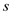

Derive the expression for quality factor of the low pass notch filter.
Thus, the quality factor of the low pass notch filter is,  .
.
Refer to Figure 16.22 (e) in the textbook for the Low pass Notch (LPN) filter circuit.
The transfer function of the low pass notch filter is,
Substitute 0 for  in the equation for the DC gain.
Thus, the DC gain is, .
The transfer function of the low pass notch filter is,
Compare the transfer function with .
Thus, the notch frequency is, .
Derive the expression for resonant frequency of the low pass notch filter.
Thus, resonant frequency of the low pass notch filter is,
Derive the expression for quality factor of the low pass notch filter.
Thus, the quality factor of the low pass notch filter is, .
Choose .
Thus the design equations are,
 .
.